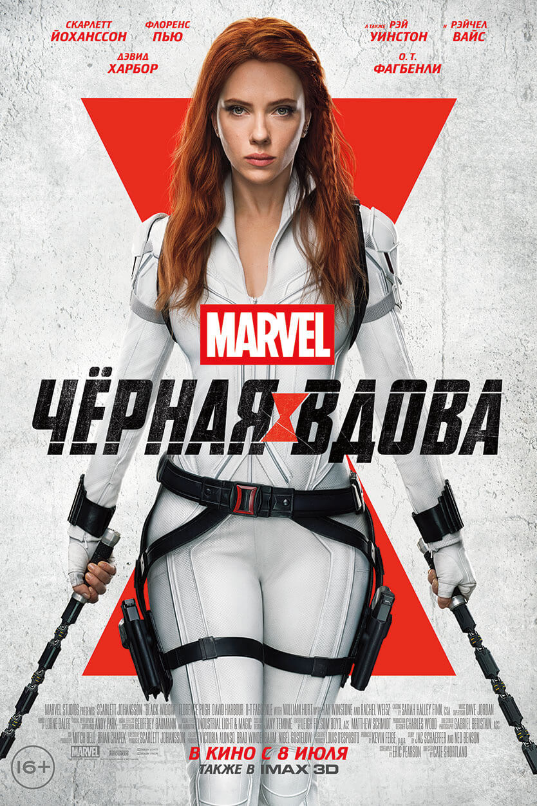

Черная вдова
Наташе Романофф предстоит лицом к лицу встретиться со своим прошлым. Чёрной Вдове придется вспомнить о том, что было в её жизни задолго до присоединения к команде Мстителей, и узнать об опасном заговоре, в который оказываются втянуты её старые знакомые — Елена, Алексей (известный как Красный Страж) и Мелина.
ПодробнееЧеловек-паук: Нет пути домой
Жизнь и репутация Питера Паркера оказываются под угрозой, поскольку Мистерио раскрыл всему миру тайну личности Человека-паука. Пытаясь исправить ситуацию, Питер обращается за помощью к Стивену Стрэнджу, но вскоре всё становится намного опаснее.
ПодробнееМатрица:Воскрешение

Геймдизайнер Томас Андерсон сделал себе имя работой над трилогией игр «Матрица». Хотя окружающий мир периодически даёт сбои и обнажает свою истинную сущность, бывший Нео исправно посещает психотерапевта, принимает пилюли и практически убедил себя, что всё это — игра его воображения. Но однажды на него выходит хакерша Багз и предлагает снова следовать за белым кроликом.
Подробнее